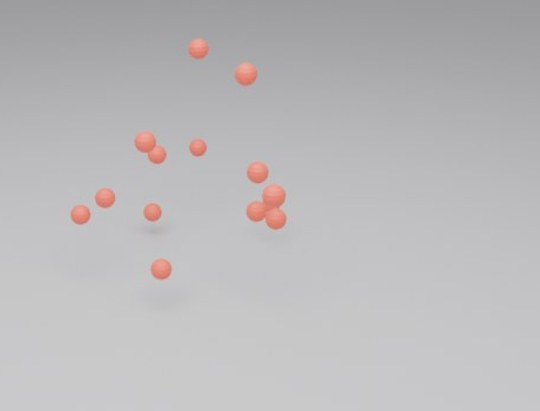
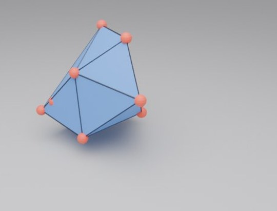

Bonus lesson
Convex Hull
The Convex Hull operator takes a point cloud as input and outputs a convex hull surrounding those vertices. In Edit Mode, find it under Mesh › Convex Hull.
1. Point cloud

2. After Convex Hull

Options
- Delete Unused: removes selected vertices, edges and faces that were not used as part of the hull. Vertices and edges used by other edges and faces outside the selection are not deleted.
- Use Existing Faces: where possible, uses existing input faces that lie on the hull. This lets the output contain n-gons rather than triangles (or quads if Join Triangles is on).
- Make Holes: deletes edges and faces in the hull that were part of the input too. Useful for bridging, to delete faces between the existing mesh and the hull.
- Join Triangles: joins adjacent triangles into quads, with the same properties as the Triangles to Quads operator.
- Max Face Angle, Max Shape Angle, Compare: see Triangles to Quads.
The manual also says this operator can be used as a bridge tool.
Read the manual page on Convex Hull.
Try it
This exercise is our own suggestion and has not been run step by step in the GUI. Add a cube, enter Edit Mode, move a few vertices around, select all and choose Mesh › Convex Hull. Use Ctrl+Z to undo.